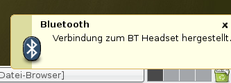

Bluetooth Headset
Archivierte Anleitung
Dieser Artikel wurde archiviert, da er - oder Teile daraus - nur noch unter einer älteren Ubuntu-Version nutzbar ist. Diese Anleitung wird vom Wiki-Team weder auf Richtigkeit überprüft noch anderweitig gepflegt. Zusätzlich wurde der Artikel für weitere Änderungen gesperrt.
Zum Verständnis dieses Artikels sind folgende Seiten hilfreich:

Bluetooth Headset einrichten¶
Allgemein¶
Gerade für Anwendungen wie Skype oder Ekiga ist ein kabelloses Headset sehr komfortabel. Zur Übertragung der Audiodaten ist der aktuelle Stand der Technik Bluetooth. Dieser universelle Funk-Standard ermöglicht es z.B. auch, dass Handys dieses Headset als Freisprecheinrichtung nutzen können.
Da diese ganze Technik relativ neu und nicht so weit verbreitet ist, verläuft die Einrichtung nicht ganz unproblematisch. Die benötigte Software befindet sich auch noch im Alpha-Stadium, trotzdem funktioniert sie im allgemeinen gut.
Achtung: Diese Vorgehensweise funktioniert unter Ubuntu 9.04 nicht mehr. Hier sollte auf die Anleitung  auf der Bluez Homepage zurückgegriffen werden.
auf der Bluez Homepage zurückgegriffen werden.
Hardware¶
Im Prinzip sollten alle Bluetooth Headsets unterstützt werden. Eine Liste von erfolgreich getesteten Headsets ist auf der bluetooth-alsa Homepage zu finden.
Mehr Probleme kann die Wahl des Bluetooth-Adapters machen. Empfehlenswert sind Adapter mit einem Chipsatz von CSR (Cambridge Silicon Radio), wie z.B. der Adapter "MDU-0005USB" von Level One.
Weitere funktionierende Bluetooth-Dongles sind in der Hardwaredatenbank zu finden.
Software¶
Ist die entsprechende Hardware vorhanden, kann die Einrichtung der Software losgehen. Als erstes wird das Ubuntu-System für Bluetooth vorbereitet, woraufhin man schon mal dem Headset "Hallo" sagen kann.
In einem zweiten Schritt wird dann das Soundsystem angepasst und konfiguriert.
Bluetooth Vorbereitungen¶
Die Einrichtung von Bluetooth ist auch schon im Artikel Bluetooth/Einrichtung beschrieben und beschränkt sich eigentlich auf die Installation [1] der folgenden Pakete:
bluez-utils
bluez-btsco (universe, [2])
bluez-passkey-gnome (nur unter Edgy verfügbar) bzw. bluez-gnome (erst ab Feisty verfügbar)
Sind die Paket installiert, kann man schon mit seinem Bluetooth-Dongle reden. Der folgende Befehl in einem Terminal [3] verrät etwas über die Fähigkeiten des Adapters:
sudo hciconfig hci0 revision
Bei der Ausgabe sollte auch unbedingt die Zeile "SCO mapping: HCI" stehen. Ist dies nicht der Fall, raten die Autoren der Bluetooth-Audio Software zu einem anderen Adapter.
Jetzt kann man sich auf die Suche nach Bluetooth-Geräten machen. Der Befehl
hcitool scan
listet alle gefundenen Geräte auf. Eventuell muss man dabei den Pairing-Modus einschalten, was bei Headsets oft durch langes drücken des Einschalt-Knopfes funktioniert. Die Ausgabe sieht dann so ähnlich aus:
Scanning ...
00:0D:44:03:6B:8A Logitech HS01-V16Vor dem Namen des Gerätes befindet sich die Bluetooth Adresse, die später für den Sound-Treiber benötigt wird.
Kernel Modul snd-bt-sco laden¶
Damit der Kernel den Bluetooth-Stick auch als Soundkarte nutzen kann, muss ein Kernelmodul geladen werden. Damit dies automatisch beim Booten geschieht, muss das Modul zur Datei /etc/modules hinzugefügt werden. Es muss nur die Zeile
snd_bt_sco
mit einem Editor [4] angefügt werden. Um das Kernel-Modul nun auch ohne einen Rechner-Neustart zu laden, führt man einmalig den Befehl
sudo modprobe snd-bt-sco
aus. Verbindet man anschließend den Bluetooth Adapter (wieder) mit dem PC, sollte man mit dem Befehl
dmesg | grep snd-bt-sco
in etwa diese Ausgabe erhalten:
... Bluetooth: L2CAP ver 2.7 Bluetooth: L2CAP socket layer initialized Bluetooth: RFCOMM ver 1.5 Bluetooth: RFCOMM socket layer initialized Bluetooth: RFCOMM TTY layer initialized usb 1-1.2: new full speed USB device using ohci_hcd and address 6 snd-bt-sco revision 1.8 $ snd-bt-sco: snd-bt-scod thread starting
Und ein neues Sound-Device sollte existieren:
cat /proc/asound/cards
Die Ausgabe sollte etwa so aussehen:
0 [Live ]: EMU10K1 - Sound Blaster Live!
Sound Blaster Live! (rev.4) at 0xe000, irq 12
1 [Headset ]: Bluetooth SCO - BT Headset
BT Headset 1Oftmals hat es sich bewährt, dass die eingebaute Soundkarte die ID 0 hat. Sonst verschieben sich nämlich die IDs, je nach dem ob beim Booten der Bluetooth Dongle im Rechner steckt oder nicht. Dazu trägt man das Modul der Soundkarte vor snd_bt_sco in die /etc/modules ein.
Kennt man das Soundkartenmodul nicht, hilft ein
lsmod | grep snd
weiter. Die Module, die für den Sound zuständig sind, nennen sich immer snd_xyz. Also zum Beispiel snd_intel8x0 für den Intel i810 Chipsatz.
Zum Headset verbinden¶
Nun muss man dem System sagen, das Headset zu nutzen. Bei der ersten Verbindung muss sich das Headset im Pairing-Modus befinden und man wird aufgefordert eine Pin-Nummer einzugeben. Meist ist das bei Headsets die 0000, klappt dies nicht sollte man einen Blick in das Handbuch des Headsets werfen.
btsco -v xx:xx:xx:xx:xx:xx
Wobei die xx-Werte gegen die Bluetooth-Adresse des Headsets (siehe oben) ausgetauscht werden muss. Die Ausgabe sieht dann so aus:
btsco v0.42 Device is 1:0 Voice setting: 0x0060 RFCOMM channel 1 connected
Sollte hier ein Fehler, wie z.B.
Failed to connect to SDP server on xx:xx:xx:xx:xx:xx: Permission denied
kommen, dann hilft es den bluez-Dienst neu zu starten
sudo /etc/init.d/bluez-utils restart # Bis Ubuntu Dapper Drake 6.06 sudo /etc/init.d/bluetooth restart # Ab Ubuntu Edgy Eft 6.10
und dann den Verbindungsversuch neu zu starten. In manchen Fällen hilft es auch, den Rechner komplett neu zu starten.
Sounds ausgeben¶
In einem zweiten Terminal [3] kann man jetzt eine Soundausgabe starten
aplay -B 1000000 -D plughw:Headset /usr/share/sounds/alsa/Noise.wav
Das Headset bzw. der Bluetooth Audio Adapter sollte nun auch in anderen Anwendungen zur Verfügung stehen. Wählt man diesen aus und hat die Verbindung aktiviert, so sollte man Sounds über das Headset beklommen.
bthelper¶

Archivierte Anleitung
Dieser Artikel wurde archiviert, da er - oder Teile daraus - nur noch unter einer älteren Ubuntu-Version nutzbar ist. Diese Anleitung wird vom Wiki-Team weder auf Richtigkeit überprüft noch anderweitig gepflegt. Zusätzlich wurde der Artikel für weitere Änderungen gesperrt.
Besitzt man ein Bluetooth Headset und hat dieses auch korrekt eingerichtet, so kann man damit noch nicht wirklich komfortabel arbeiten. Eine Verbindung zum Headset muss immer noch manuell über "btsco..." hergestellt werden.
Hier erleichtert bthelper diesen Vorgang. Das Skript wird an die eigenen Bedürfnisse angepasst, abgespeichert und z.B. ein Starter im GNOME-Panel angelegt. Beim Aufruf wird dann die Verbindung zum Headset aufgebaut, überprüft ob der Verbindungsaufbau erfolgreich war und das Ergebnis visuell über ein Popup dem Benutzer mitgeteilt.
Für diese optische Feedback-Meldung braucht man das Paket
libnotify-bin (universe)
auf dem Rechner.
#!/bin/bash
#
# bthelper - Verbindet das
#
# Autor: Christoph Langner (UbuntuUsers.de)
# Lizenz: Public Domain
MAC=00:11:22:33:44:55 # Hier die "MAC" Nummer des BT Headsets eintragen
PID=`pidof btsco`
TITLE="Bluetooth"
CONNECTED="Verbindung zum BT Headset hergestellt."
ALLREADYCONNECTED="Verbindung zum BT Headset existiert bereits!"
FAILED="Verbindung zum BT Headset fehlgeschlagen!"
BTLOGO=/usr/share/icons/gnome/48x48/stock/io/stock_bluetooth.png
WARNING=/usr/share/icons/gnome/48x48/stock/generic/stock_dialog-warning.png
if [ ! $PID ]
then
btsco -s -f $MAC
if [ -e /tmp/bt_headset_connected ]
then
notify-send -i $BTLOGO -t 3000 "$TITLE" "$CONNECTED"
else
notify-send -i $WARNING -t 3000 "$TITLE" "$FAILED"
killall btsco
fi
else
notify-send -u critical -i $BTLOGO -t 3000 "$TITLE" "$ALLREADYCONNECTED"
fi
Problemlösungen¶
Die Verwendung eines USB-Hub kann dazu führen, dass das Bluetooth-Headset keine Signale erhält und man somit nichts hört. Um dieses Problem zu lösen, einfach den Bluetooth-Stick direkt in einen USB-Port des Rechners stecken.
Es kommt vor, dass die Zuordnung Bluetooth Mac Nummer und Authorisations-Schlüssel verloren geht. Mit dem Ergebnis, dass man sich nicht mehr zum Headset verbinden kann. Versucht man es mit
btsco -v <mac_addr>
sieht man als Ausgabe etwas in dieser Art
btsco v0.4 Device is 1:0 Error: Failed to connect to SDP server: Permission denied Assuming channel 2 Voice setting: 0x0060 Can't connect RFCOMM channel: Too many levels of symbolic links
Man kann dies recht einfach lösen, indem man das Pairing des Bluetooth Headsets mit dem Adapter wiederholt. Dazu muss man in das Verzeichnis /var/lib/bluetooth wechseln. Dort sind die Gerätedaten in nach den MAC Adressen benannten Verzeichnissen abgelegt. Hier muss dann das Verzeichnis mit dem Namen der MAC Nummer der Headset gelöscht werden.
Beim nächsten Verbindungsversuch, wird man wie oben beschrieben nach dem Bluetooth Schlüssel des Gerätes gefragt und man kann das Headset wieder benutzen.
- Erstellt mit Inyoka
-
 2004 – 2017 ubuntuusers.de • Einige Rechte vorbehalten
2004 – 2017 ubuntuusers.de • Einige Rechte vorbehalten
Lizenz • Kontakt • Datenschutz • Impressum • Serverstatus -
Serverhousing gespendet von